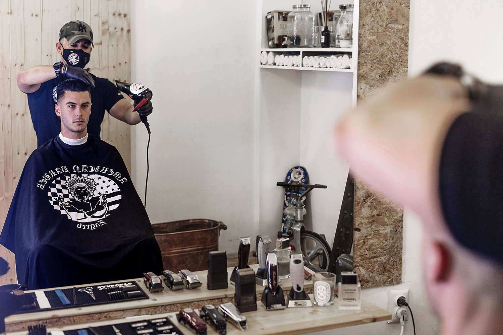

The barber
From New York studios to a Zagreb chair
The American Barbershop Zagreb is run by Shawn — "The American" — a California-born barber who learned the craft the long way. He trained in cosmetology, apprenticed in New York City, and spent years working in the editorial world of fashion hair, assisting on shoots and fashion weeks in London, Milan and Paris.
Between careers behind the chair, Shawn served in the US Army, deployed with a Combat Support and Sustainment Battalion in Germany and later an airborne Civil Affairs unit. The discipline stuck: clean tools, sanitized gear after every cut, and a shop that runs on respect for your time.
Today the shop at Kačićeva 10 carries furniture from Shawn's private New York studio, an American neighborhood-barbershop atmosphere, and one simple rule: no appointments, walk-ins only. You come in, you take a seat, you get a proper cut, and you talk about whatever's on your mind — in fluent English or in Croatian.
It's the only American barbershop in Croatia, and one of the only ones in Europe that isn't next to a US military base. The press seems to think that's worth writing about — see the press page.
